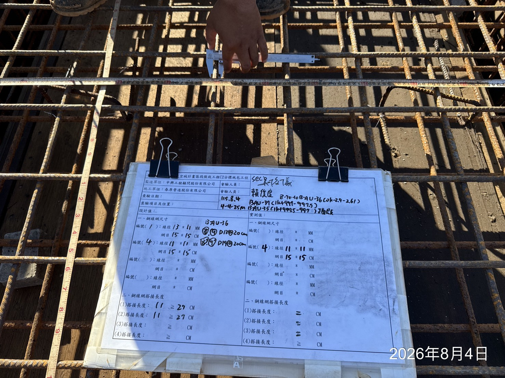
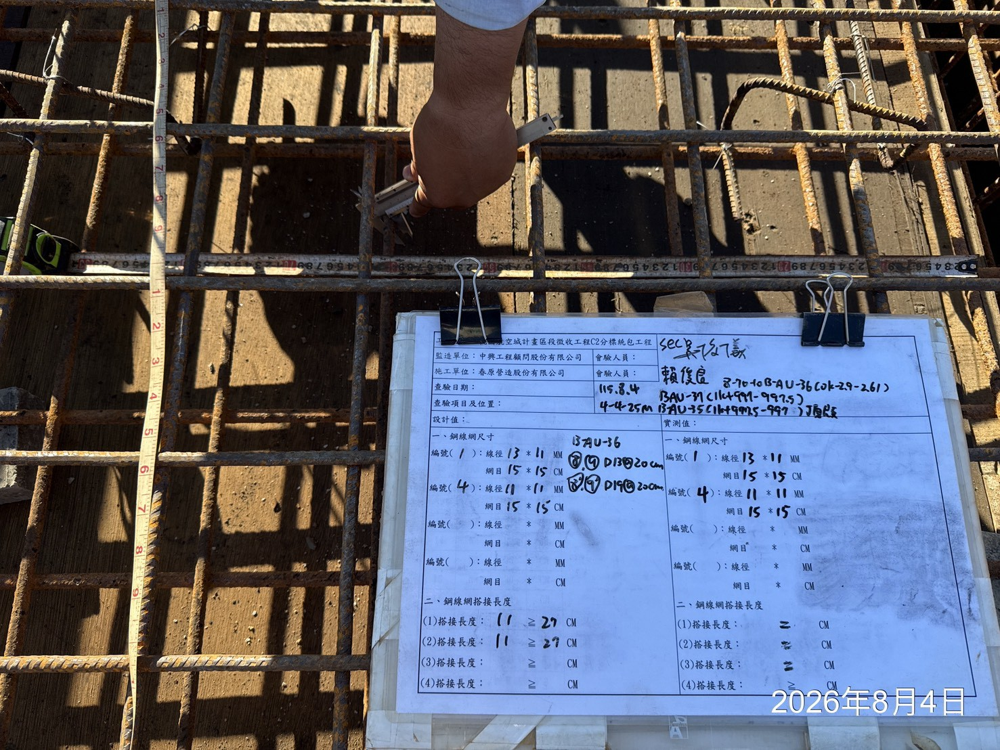

folder_open
桃園市立圖書館新建工程
arrow_drop_down
search
tune
{{ avatar }}
{{ userName }}
{{ userOrg }}
{{ pageTitle }}
{{ pageLede }}
{{ f.label }}
{{ f.value }}
{{ f.note }}
今日待辦
Ball in court · {{ roleLabel }}
{{ t.dueChip.label }}
{{ t.code }}
{{ t.title }}
{{ t.note }}
warning風險警示
AI · 每日 06:00{{ a.levelChip.label }}{{ a.tag }}
{{ a.title }}
依據：{{ a.source }}
auto_awesomeAI 今日已代辦
{{ a.what }}
{{ a.n }}
每一項都可展開比對來源段落；核定前不寫入契約規則。
auto_awesomeAI 草稿 · 待確認產生於 08:12
依昨日日誌、今日 6 張現場照片與氣象署觀測資料，草擬本日人力、機具與施作項目。監造尚未簽認。
施工日誌 · 8 月 20 日（三）
陰・28°C・降雨 0 mm・可施工| 施作項目 | 位置 | 人力 | 機具 | 查驗 |
|---|---|---|---|---|
| {{ r.item }} | {{ r.loc }} | {{ r.men }} | {{ r.eq }} | {{ r.qc }} |
現場照片
6 張 · AI 已標記 2 張異常 · 自動比對工項

缺失追蹤
{{ d.code }}{{ d.state }}
{{ d.title }}
{{ d.who }}
檢驗停留點
{{ i.title }}
{{ i.when }}
契約重點 · AI 擷取待核定
共 106 條 · 待核定 12 · 已核定 88 · 退回 6| 條號 | 履約要求 | 責任方 | 期限 | 信賴度 | |
|---|---|---|---|---|---|
| {{ o.clause }} | {{ o.text }} 來源：{{ o.src }} |
{{ o.party }} | {{ o.due }} | {{ o.conf }} |
核定後即成為契約規則，會自動長出期限型待辦、綁定送審與查驗項目；退回僅記錄不刪除，稽核軌跡保留原始擷取內容。
送審文件
待審 5{{ s.code }}{{ s.tag.label }}
{{ s.title }}
{{ s.note }}
auto_awesomeAI 審查助理
SUB-032 混凝土配比與契約第 03310 節第 2.4 款不符：規範要求 28 天抗壓 350 kgf/cm²，送審書載明 280。
工程疑義 · RFI
RFI-014 地下室止水帶規格與圖說不符
待機關回覆 · 剩 1 日
RFI-013 消防管線與結構樑衝突
已回覆 · 衍生變更設計 CO-003
{{ f.label }}
{{ f.value }}
{{ f.note }}
第 7 期估驗計價 · 工項明細
量測期間 8/01 – 8/20 · 監造抽驗 12 項| 項次 | 工項 | 契約數量 | 本期 | 累計 % | 本期金額 |
|---|---|---|---|---|---|
| {{ b.no }} | {{ b.qty }} | {{ b.now }} | {{ b.cum }} | {{ b.amt }} | |
| 合計 | 第 7 期估驗金額（未稅） | 42.7% | 32,180,000 |
AI 已比對上期數量與現場查驗紀錄，2 項數量差異已標記。
進度 S 曲線
落後 4.2%請款與保留款
{{ p.label }}
{{ p.note }}
專案文件
42 件 · 3.8 GB · 全數留存於境內| 文件 | 分類 | 版本 | AI 處理 | 上傳 |
|---|---|---|---|---|
{{ d.name }} {{ d.by }} |
{{ d.kind }} | {{ d.ver }} | {{ d.tag.label }} | {{ d.at }} |
上傳後自動分類、抽取履約要求與標單，並記錄擷取來源頁碼。
驗收結算
{{ a.step }}
{{ a.who }}
施工月報 · 8 月
AI 已彙整本月日誌 20 篇、查驗 34 件、缺失 9 件與計價 1 期，草擬月報 14 頁。監造尚未簽章。
| 專案 | 承攬廠商 | 契約金額 | 計畫 | 實際 | 已計價 | 風險 |
|---|---|---|---|---|---|---|
{{ p.name }} {{ p.stage }} |
{{ p.vendor }} | {{ p.amount }} | {{ p.plan }} | {{ p.actual }} | {{ p.paid }} | {{ p.tag.label }} |
跨案例外事項
{{ e.title }}
{{ e.detail }}
活動紀錄 · 稽核軌跡
{{ a.at }}
{{ a.what }}
問 PMIS
僅回答本案資料 · 每句附來源第 7 期估驗可以送嗎？有什麼會被退？
auto_awesomePMIS.ai
可以送，但有兩處會被退回，建議先補齊：
- 項次 03-210 鋼筋加工組立本期 128 t，缺 8 月 12 日進場批次的出廠證明。契約 03210 節 2.3 款
- 項次 08-410 外牆帷幕本期數量較現場查驗紀錄多 42 m²。查驗紀錄 QC-0221
另提醒：保留款累計 NT$12,480,000，第 5 期應退部分逾期 11 日未辦。
取用資料 · Tool trace
標單工項（1,842 筆）→ 估驗計價 第 7 期 → 品質查驗紀錄 34 件 → 契約重點 106 條 → 請款收款 6 期
常問
代理權限
Agent 可讀本案全部模組，寫入一律先產生草稿並留下操作者。
{{ f.label }}
{{ f.value }}
{{ f.note }}
專案方案與 AI 用量
| 專案 | 方案 | 本月呼叫 | Token | 成本 |
|---|---|---|---|---|
| {{ a.name }} | {{ a.plan }} | {{ a.calls }} | {{ a.tokens }} | {{ a.cost }} |
功能開關
{{ f.name }}
{{ f.scope }}
資安與留存
稽核日誌保存6 個月
弱點掃描2026-08-11 · 0 高危
個資境外傳輸停用
防護基準普通級 · 符合
載入中 · Skeleton
骨架維持真實列高與欄位位置，載入完成不位移。動畫 1.4s ease-in-out 透明度 .45→1。
空狀態 · Empty
inbox
本期還沒有待審文件
廠商送審後會出現在這裡，並自動帶入契約審查期限。
錯誤 · Error
error
狀態載入失敗
查不到資料不等於沒有資料。請重試，或前往專案文件查看處理狀態。
對話框 · Dialog（危險動作）
delete_forever
永久刪除專案
「桃園市立圖書館新建工程」的標單、估驗、進度、施工日誌、查驗、缺失將一併永久刪除，無法復原。
Snackbar（含復原）
已核定 8 條契約重點
復原
close
左下角出現，4 秒後自動消失；含破壞性動作時提供「復原」並延長至 8 秒。
選單 · Menu（專案切換）
check桃園市立圖書館新建工程
check中壢運動公園改善工程
check大溪河濱道路拓寬工程
add新增專案
delete刪除此專案
表格：排序、篩選、分頁
| 條號 | 履約要求 | 責任方 | 信賴度arrow_upward |
|---|---|---|---|
| 第 18 條 | 逾期違約金按契約總價千分之一計算 | 廠商 | 0.72 |
| 附件三 4.2 | 每日回報工地安全衛生自主檢查表 | 廠商 | 0.68 |
| 第 9 條 2 款 | 每月 5 日前提送上月施工月報一式三份 | 廠商 | 0.89 |
每頁列數 25 ▾
1–25 / 106
chevron_left
chevron_right